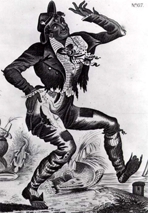
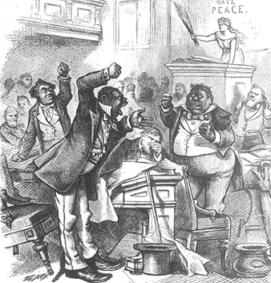
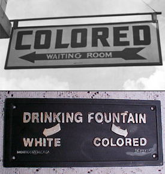

|
Segregation, a complex system of laws and mores wherein caste
distinctions are expressed in terms of physical distance, evolved in the
South for many reasons--white anxieties and squeamishness, political
opportunism, above all a white desire to subordinate black people
through ostracism and public humiliation. Although segregation has been
and remains a national phenomenon, only in the South did it develop into
a virtually total system of racial control for such a prolonged period
of time; only in the South did its defense become a "cardinal test" of
regional identity.
Southern segregation was born long before the Civil War. It first
appeared not on the plantations and farms, where a color line would have
been an unnecessary nuisance, but in the antebellum cities and towns,
|

The "Jim Crow" character was created
well before the Civil War. It provided both a rationale
and a name for segregation.
|
where large communities of free blacks and unusually independent slaves
combined with white nonslaveholders and transients to create a society
totally alien to the plantation tradition of rigid, personal racial
control. Many urban whites were annoyed by unwelcomed contact with black
people in public places and apprehensive about the dangers to slavery
and white supremacy posed by interracial fraternization, especially in
black bawdy houses and grog shops. Thus patchwork segregation systems
made up of municipal ordinances, management policies, and customs began
to emerge in such cities as New Orleans Charleston, Savannah, Mobile,
and Richmond. By 1860 most urban blacks were excluded from restaurants,
saloons, hotels, and some public grounds and relegated to segregated
sections in hospitals, theaters, cemeteries, jails, and public
conveyances.
Emancipation created a stronger and more widespread desire to
safeguard white supremacy by secondary means now that slavery was dead.
The interlude between Confederate rule and the onset of Radical
Reconstruction was too brief to permit formulation of a full-scale
segregation system, but a beginning was made. Now that freedmen could
legally learn to read and write, several legislatures enacted laws
excluding blacks from public schools. Florida, Texas, and Mississippi
adopted measures excluding black people from first-class railroad
coaches. Many municipalities wrote segregationist zoning, vocational,
and public accommodations provisions into their local Black Codes.
Radical Reconstruction engendered the first serious attacks on
segregation. Massive demonstrations by New Orleans blacks in 1867 put an
end to segregated streetcars there, a result soon duplicated in
Richmond, Charleston, and Louisville. State laws forbidding segregated
places of public accommodation were enacted in Mississippi, South
Carolina, and Louisiana in 1868 and Florida in 1873. Racially segregated
public schools were outlawed in South Carolina and Louisiana. A stubborn
crusade for federal anti-segregation legislation by Senator Charles
Sumner of Massachusetts culminated in the Civil Rights Act of 1875,
which prohibited racial discrimination in hotels, theaters, conveyances,
and ocher places of public accommodation. In practice, however, the
challenge to the color line was much less spectacular. Several public
schools in New Orleans were successfully integrated from 1870 to 1877,
as was the University of South Carolina from 1873 to 1877, but school
desegregation elsewhere was virtually nonexistent. Black people were
allowed to ride with whites on some railroads and steamboats, especially
in the seaboard states, and black attempts to test the 1875 Civil Rights
Act in theaters, restaurants, and taverns in New Orleans and some North
Carolina communities were partially successful. On the whole, however,
segregation survived relatively unscathed. Few blacks asserted their
legal rights, and most Radical governments tolerated or even encouraged
de facto segregation in institutions under their control.
The threat to segregation eased considerably with the collapse of
Reconstruction. The color line was quickly restored in the New Orleans
schools and the University of South Carolina, many state desegregation
laws were amended or voided, and new public institutions were born
|

Portraying African American political
leaders as incompetent, as this 1874 cartoon does, was
central to justifying segregation.
|
segregated. An 1881 Tennessee law required separate first-class seating
for black railroad passengers. In general, however, the Redeemer
Governments did not rush to write segregation into their legal codes,
for such a course would have been in direct violation of federal law.
That barrier fell in 1883, when the U.S. Supreme Court invalidated the
1875 Civil Rights Act in the Civil Rights Cases. In 1887 Florida enacted
a Jim Crow law requiring "separate but equal" railroad accommodations,
an edict duplicated by Mississippi in 1888 and Texas in 1889. After the
Supreme Court upheld the Mississippi law in 1890, six other states
enacted similar measures within a year. A challenge to the Louisiana law
led to the infamous Plessy v. Ferguson ruling in 1896, in which
the Court sanctified separate but equal as the law of the land.
The Plessy decree inspired an epidemic of Jim Crow legislation
in the South. All public transportation and depots were segregated by
state law, as were most mental hospitals, prisons, homes for the
handicapped and the aged, and other state institutions. Municipalities
adopted ordinances segregating parks, auditoriums, jails, cemeteries,
even neighborhoods. Businesses, with or without legal mandate,
improvised their own Jim Crow policies. Little signs reading Whites Only
and Colored decorated drinking fountains, toilets, ticket windows, and
doors to restaurants and saloons. The code encompassed bawdy houses in
New Orleans, telephone booths in Oklahoma, and courtroom Bibles in
Atlanta. By the time the nation went to war in 1917 to make the world
safe for democracy, Jim Crow had developed into an enormously thorough
system that governed black people in nearly every public place. After
World War I Jim Crow simply kept up with technological and social
change, expanding into such facilities as buses and bus depots,
taxicabs, ambulances, air terminals, swimming pools, and soda fountains.
This Jim Crow mania developed when it did for several reasons. The
tensions created by economic depression and the epic political wars of
the 1890s, the helplessness of the newly disfranchised blacks, the sheer
political opportunism of such race-baiting demagogues as Pitchfork
Tillman of South Carolina and James K. Vardaman of Mississippi, and a
rising tide of ethnic intolerance outside the South each played an
important part. The paramount factor, however, the sine qua non of Jim
Crow's dramatic proliferation was simply that a majority of white
southerners at long last had official permission to indulge their urge
to subordinate and humiliate black people through constant reminders of
their inferior status. Despite the separate but equal litany of the
laws, the slightest trace of equality (or even true separation in some
cases) would have negated their basic intent. Thus black people rode in
the rear of buses, drank from rusted spigots a few inches away from
spotless ones for whites, and buried their dead in weedy, overgrown
plots usually separated from neatly trimmed white ones by only a hedge
or picket fence. Often blacks were denied even separate facilities,
especially in business establishments, where black restrooms, fitting
rooms, and lunch counter sections were uncommon.
Like slavery before it, segregation won the support of most of the
South's most eminent intellectual and spiritual leaders. Scientists like
Robert Bennett Bean, James Bardin, and Nathan Shaler proclaimed Jim Crow
in tune with the laws of nature. Historian Philip Alexander Bruce
described it as a manifestation of "the instinct of race preservation."
Charles B. Galloway, William Montgomery Brown, and other churchmen
practically transformed it into an eleventh commandment. In the process,
segregation gradually acquired a symbolic importance to southern whites,
which transformed it in their minds from a petty code of caste elitism
into a hallowed symbol of the "southern way."
All the while, Jim Crow was developing into a symbol of great
significance to black southerners as well. Martin Luther King, Jr.,
never forgot a shoe clerk's refusal to wait on him up front when he was
a child, nor did James Meredith ever forget the humiliation of being
|

Segregation was firmly entrenched in the
South by the early decades of the 20th century.
|
moved to a Jim Crow car when the train he was riding home from Detroit
reached Memphis. For them and millions more, all racial injustice came
to be symbolized by the despised Whites Only signs. When the Civil
Rights Movement developed during the 1950s and 1960s, the death of Jim
Crow became its first priority. Black children braved mob disorders and
"massive resistance" in Little Rock, New Orleans, and elsewhere to put
into practice the Supreme Court's epic 1954 ban on separate but equal
public schools (Brown v. Board of Education). The color line in
southern colleges crumbled with a night of terror in Mississippi in 1962
and a faintly absurd "stand" in the schoolhouse door in Alabama ten
months later. Jim Crow public accommodations, weakened by a bus boycott
in Montgomery, Freedom Rides through the Deep South, and sit-ins nearly
everywhere, were finally doomed by the landmark Civil Rights Act of
1964. Similar changes have taken place, quietly and peacefully for the
most part, at hiring windows throughout the South. Dead as a legal
precept and dying, however slowly and grudgingly, as a de facto
denominator of caste, Jim Crow appears destined to join slavery and the
lynching bee as unlamented relics of the southern past.
Source: David C. Roller and Robert W. Twyman, eds. The Encyclopedia
of Southern history (Baton Rouge: Louisiana State University Press, 1979), 1088-90.
|